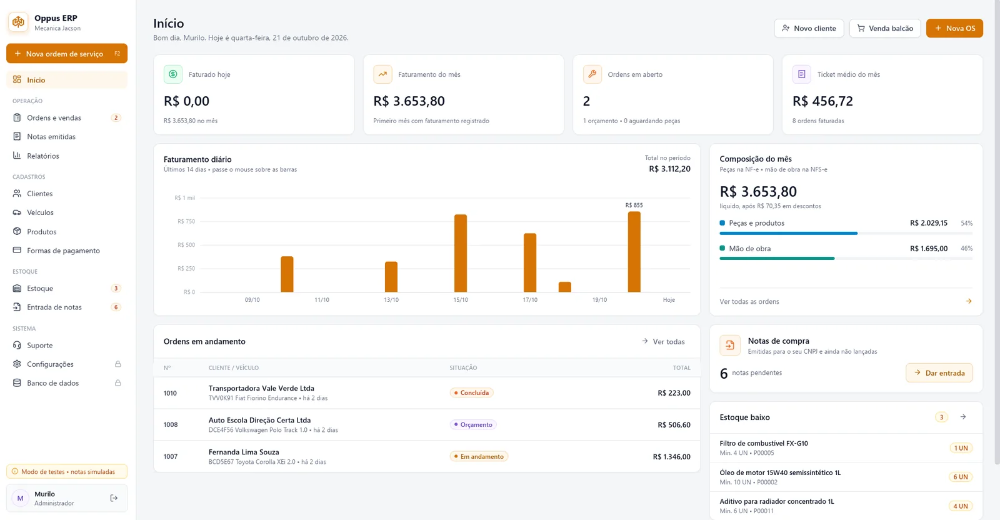
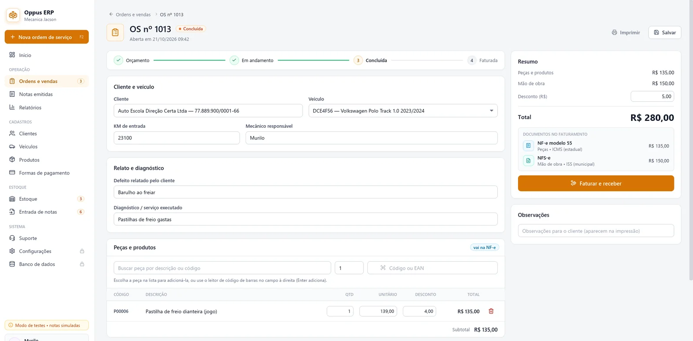
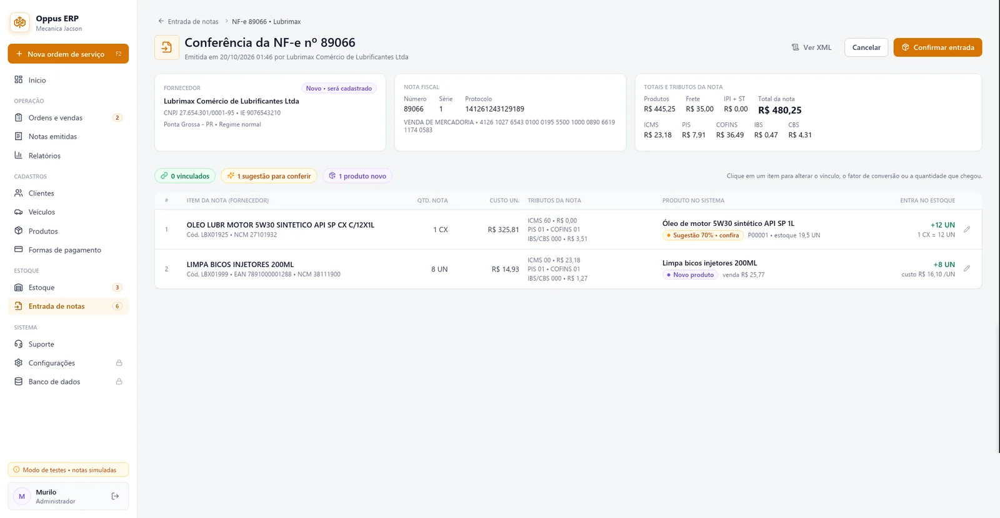

ERP para empresas de 1 a muitas filiais
Da ordem de serviço à nota fiscal. Sem planilha no meio.
O Oppus junta vendas, estoque, notas fiscais e recebimentos num sistema só. Serve para a oficina da esquina, para a revenda agrícola e para a rede com várias filiais. Cada nota sai certa e o contador recebe tudo pronto no fim do mês.
- NF-e e NFS-e
- Backup automático
- Feito em Santa Catarina
- Amortecedor dianteiro2 × 369,00738,00
- Bieleta da barra estabilizadora2 × 79,00158,00
- Substituição de amortecedores2 h × 150,00300,00
- Alinhamento e balanceamento1 × 150,00150,00
Produto vai na NF-e, serviço vai na NFS-e. O Oppus separa sozinho e divide os pagamentos entre as duas notas.
01 · Segmentos
Cada negócio tem o seu jeito de vender.
O que muda de uma oficina para uma revenda agrícola não é o sistema: é o que aparece na tela. O Oppus vem pronto para o seu dia a dia, sem adaptação que leva meses.
Peça e mão de obra na mesma OS, cada uma na sua nota.
Do orçamento ao carro entregue, com histórico por placa e o estoque baixando sozinho quando a OS é faturada.
- 01Orçamento, em andamento, aguardando peças, concluída e faturada.
- 02Histórico do veículo pela placa, inclusive no padrão Mercosul.
- 03Leitor de código de barras para lançar peças e aviso de estoque mínimo.
- 04Atalhos de teclado: F2 abre OS, F3 abre venda balcão.
Insumo, máquina e serviço de campo no mesmo controle.
Para revendas agropecuárias, prestadores de serviço rural e empresas que atendem o produtor. Compra grande entra pelo XML, sem digitar item por item.
- 01Nota do fornecedor lida pelo XML, com conversão de embalagem: saco, caixa, fardo, unidade.
- 02Custo médio recalculado a cada compra, para a margem não sumir na safra.
- 03Venda a prazo com parcelas e vários pagamentos na mesma venda.
- 04Serviço técnico e regulagem na NFS-e; insumos e peças na NF-e.
Balcão rápido, estoque certo e caixa que fecha.
Venda em poucos toques, com código de barras, várias formas de pagamento e troco calculado. No fim do dia, você sabe quanto entrou e por onde.
- 01Venda balcão sem cadastro obrigatório do cliente.
- 02Dinheiro com troco, cartão, Pix e parcelado na mesma venda.
- 03Preço pelo markup ou pela margem, você escolhe como pensa.
- 04Painel com faturamento do dia, do mês e ticket médio.
Muita nota de entrada, nenhum item digitado à mão.
O Oppus busca as notas emitidas para o seu CNPJ, vincula cada item ao produto certo e registra quando a carga chega diferente do que diz a nota.
- 01Vínculo automático pelo código do fornecedor, depois EAN, depois descrição.
- 02Conferência de recebimento: entra no estoque o que chegou de fato.
- 03Fornecedor é um cadastro só com o cliente, sem duplicar ninguém.
- 04Relatório de estoque valorizado e de divergências de entrada.
Para quem vende hora, visita e contrato.
Se você não trabalha com mercadoria, desligue a NF-e e use só a NFS-e. Ordem de serviço, recebimento e relatório continuam lá.
- 01NFS-e emitida a partir da ordem, com o serviço padrão já configurado.
- 02Serve para MEI de serviço e para empresa do Simples ou Lucro Presumido.
- 03Nota rejeitada? Corrija o cadastro e reenvie com o mesmo número.
- 04Relatório de recebimentos por período e forma de pagamento.
Várias portas abertas, uma gestão só.
Cada unidade com seus usuários, seu estoque e suas notas. A gestão acompanha o conjunto sem pedir planilha para ninguém.
- 01Perfis de Administrador, Gerente e Operador, cada um com o seu limite.
- 02Registro de quem alterou o quê, e quando.
- 03Relatórios por período para comparar o desempenho.
- 04Implantação feita por etapas, uma unidade de cada vez.
02 · Recursos
Tudo que a empresa faz no dia, num lugar só.
Sem módulo escondido em plano mais caro e sem sistema separado para nota fiscal. Abaixo, o que já vem no Oppus.
-
01
Ordens de serviço e vendas
Orçamento que vira ordem, ordem que vira venda. Produtos e serviços no mesmo documento, com leitor de código de barras e venda balcão para quem só passa no caixa.
-
02
Faturamento e recebimento
Vários pagamentos na mesma venda, troco no dinheiro, parcelamento e cartão. Cancelou? O sistema estorna estoque e pagamentos junto.
-
03
Notas fiscais emitidas
NF-e para mercadoria e NFS-e para serviço, saindo da mesma venda. Acompanhe a situação de cada uma, emita carta de correção, imprima DANFE e DANFSe ou cancele dentro do prazo. Onde há convênio, use a NF-e conjugada.
-
04
Entrada de notas de compra
Importe o XML ou consulte as notas emitidas para o seu CNPJ. Os itens são ligados aos seus produtos, a caixa com 12 vira 12 unidades e o custo médio é atualizado.
-
05
Estoque
Posição atual, alerta de estoque mínimo, ajuste de inventário com motivo e o histórico de cada movimentação. O saldo só muda por um caminho, e fica registrado.
-
06
Cadastros
Clientes e fornecedores com CPF e CNPJ validados e endereço pelo CEP, produtos com classificação fiscal, veículos e formas de pagamento.
-
07
Relatórios e contador
Vendas, notas, recebimentos, entradas, estoque valorizado e receita por classificação fiscal, que é a base do PGDAS-D do Simples. Exporte para Excel ou gere o pacote do mês com XMLs e relatórios para o contador.
-
08
Segurança e controle
Perfis de acesso, configurações protegidas por senha de administrador, auditoria das alterações, backup automático a cada 30 minutos e modo de testes para treinar a equipe sem medo.
03 · Como funciona
A informação entra uma vez e anda sozinha.
A nota de compra que chegou hoje vira estoque, o estoque vira venda, a venda vira nota fiscal e a nota vai para o contador. Ninguém redigita nada no caminho.
-
01
Compra
A NF-e do fornecedor chega. O Oppus lê o XML e confere chave, totais e NCM antes de aceitar.
XML -
02
Estoque
Cada item é ligado ao produto certo. Saldo e custo médio atualizados na hora.
Custo médio -
03
Venda ou OS
Produtos e serviços no mesmo pedido, com orçamento aprovado pelo cliente.
Orçamento -
04
Recebimento
Dinheiro, cartão, Pix ou parcelado. Vários pagamentos na mesma venda.
Caixa -
05
Nota fiscal
NF-e e NFS-e enviadas e acompanhadas até a autorização. Rejeitou, corrige e reenvia.
NF-e + NFS-e -
06
Contador
No fim do mês, um pacote com XMLs e relatórios. Sem caçar nota em gaveta.
Pacote mensal
O Oppus guarda e confere a parte fiscal; quem decide a tributação é o seu contador. As sugestões de classificação são um ponto de partida e ficam marcadas até alguém revisar.
Ver na prática04 · O sistema
Tela limpa, número grande, nada sobrando.
Feito para quem passa o dia no balcão ou na oficina, não para quem passa o dia em reunião. O que importa aparece primeiro.



05 · Do tamanho da empresa
Uma loja ou uma rede inteira. O mesmo sistema.
Comece com um computador e um usuário. Quando abrir a segunda unidade, o Oppus vai junto, sem trocar de sistema nem perder histórico.
-
Cada um vê o que precisa
Operador vende e faz OS. Gerente cuida de notas e estoque. Administrador mexe nas configurações, sempre com senha.
-
Tudo fica registrado
Alteração em configuração, cancelamento ou ajuste de estoque vai para a auditoria, com usuário e horário.
-
Backup sem lembrar de fazer
Cópia automática a cada 30 minutos e cópia manual quando quiser. Antes de qualquer mudança grande, o sistema salva uma cópia sozinho.
-
Relatório novo sem esperar o suporte
Além dos relatórios prontos, o administrador cria os seus próprios, com filtros de data e período.
06 · Implantação
Trocar de sistema sem parar a empresa.
A gente faz junto com você, no ritmo da operação. Ninguém fica sozinho com um manual de 200 páginas.
-
Conversa
Entendemos como a sua empresa vende, compra e emite nota hoje, e o que precisa mudar.
-
Configuração
Cadastramos empresa, regime tributário, usuários e formas de pagamento, e ajudamos a trazer os seus cadastros.
-
Treino e acompanhamento
A equipe treina no modo de testes, sem nota valendo. Depois, ficamos por perto nas primeiras semanas.
07 · Dúvidas
Perguntas que a gente mais ouve.
Não achou a sua? Escreva para a gente. Respondemos em até 24 horas.
O Oppus emite NF-e e NFS-e?
Sim. Mercadoria e peça saem na NF-e (ICMS, estadual) e serviço sai na NFS-e (ISS, municipal), as duas a partir da mesma venda ou OS, cada uma com o seu valor e os pagamentos divididos entre elas.
Onde o estado e a prefeitura têm convênio, também dá para usar a NF-e conjugada, com produtos e serviços no mesmo documento.
Serve para empresa pequena? E para quem tem filiais?
Serve para as duas. Dá para começar com um computador e um usuário e crescer para várias unidades e muitos usuários sem trocar de sistema nem perder o histórico.
Funciona para o meu segmento?
Hoje atendemos oficinas mecânicas, agronegócio, comércio e varejo, distribuição e prestadores de serviço. Se o seu caso é diferente, conte como a sua empresa funciona e dizemos com sinceridade se o Oppus resolve.
Preciso de internet para usar?
O Oppus é instalado no computador (Windows). Vendas, ordens, estoque e cadastros funcionam no próprio computador. A internet é necessária para enviar e consultar notas fiscais na SEFAZ e na prefeitura.
Como o meu contador recebe as informações?
Todo mês o Oppus gera um pacote com os XMLs das notas de entrada e de saída e os relatórios em planilha, incluindo a receita por classificação fiscal, que é a base do PGDAS-D para quem é do Simples. É só enviar a pasta.
Meus dados ficam seguros?
Os dados ficam no seu computador, com backup automático a cada 30 minutos e cópia manual quando você quiser. Cada usuário tem o seu perfil de acesso e as alterações importantes ficam registradas na auditoria.
Funciona com leitor de código de barras e maquininha?
Leitor de código de barras, sim, nas vendas e nas ordens de serviço. Para a maquininha de cartão, a integração depende do modelo: fale com a gente. Enquanto isso, o pagamento no cartão pode ser registrado com bandeira, NSU e autorização.
Quanto custa?
Depende do número de usuários, de unidades e de notas por mês. Conte um pouco sobre a sua empresa no formulário abaixo e mandamos uma proposta em até 24 horas.
Vocês atendem fora de Santa Catarina?
Começamos por Santa Catarina para acompanhar cada implantação de perto. Se a sua empresa é de outro estado, escreva mesmo assim: avaliamos caso a caso.
08 · Contato
Conte como a sua empresa funciona.
Preencha o formulário e o seu programa de e-mail abre com a mensagem pronta. Se preferir, escreva direto para o endereço abaixo.
Respondemos em até 24 horas